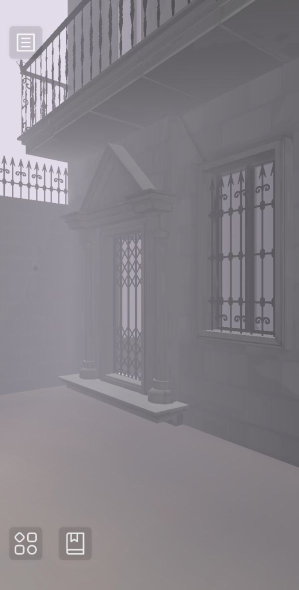
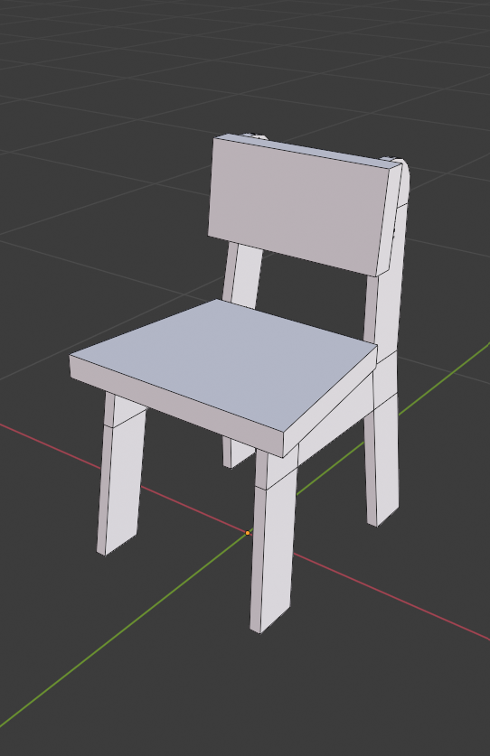
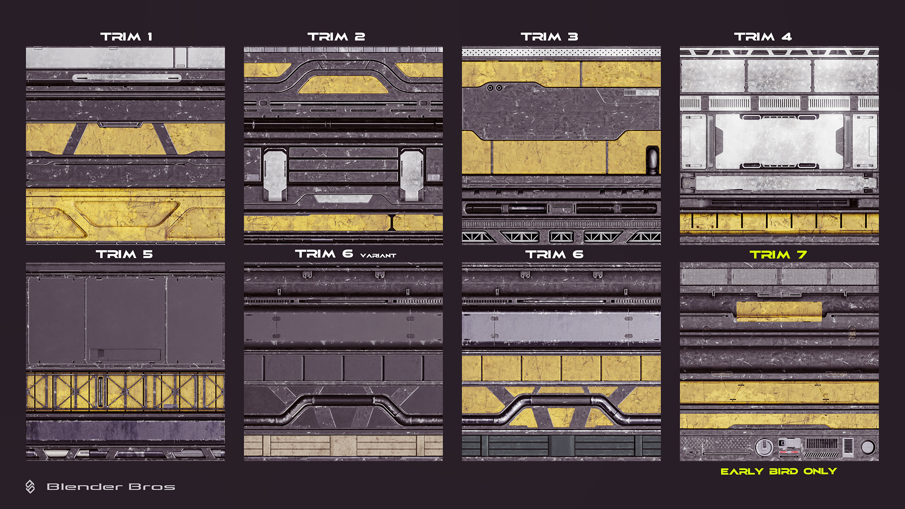
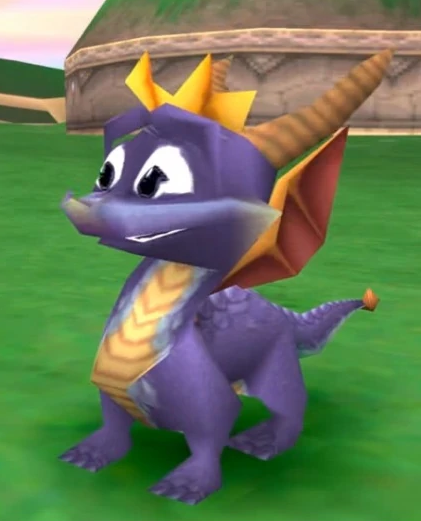
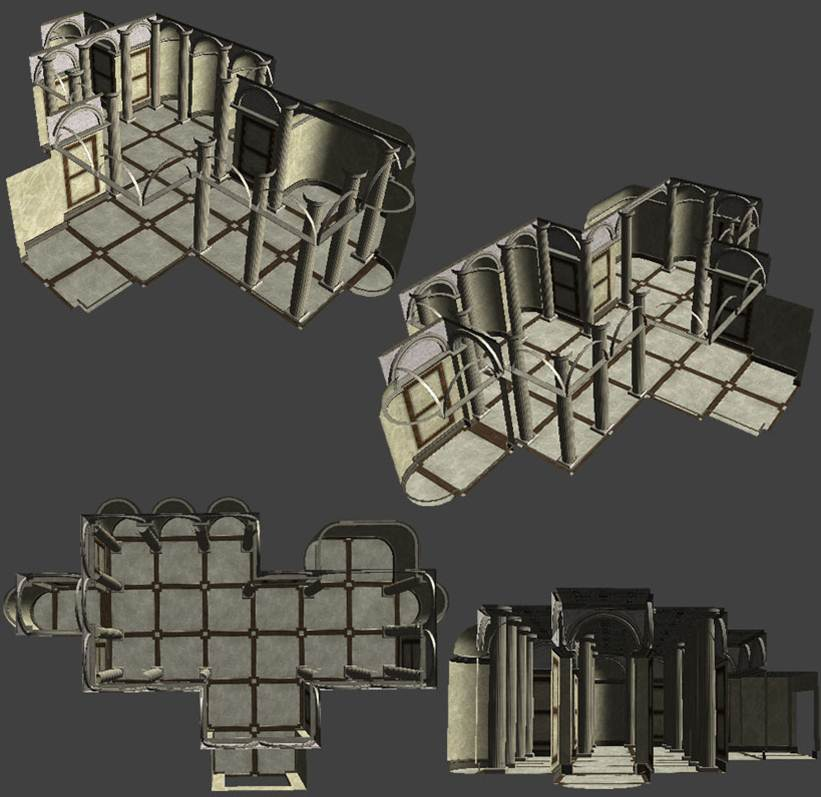

BY THE POWER OF 2
A Workshop Talk on Graphics Optimization for Artists
Casilda de Zulueta | gatdesoia.es/
GUADALINDIE | 3-4 mayo 2024
¿QUIÉN SOY?
- Casilda de Zulueta (Casi).
- Mi trabajo:
- Entwicklerin für 3D Visualizierung en ???.
- 3D Art Lead, Technical Artist, Animator para Mars Vice.
- Desarrolladora independiente:
- Coorganizadora del #FemDevsMeetup üíö
- (no confundir con FemDevs üíú).

Me preguntáis después por pegatinas.
EDUCACIÓN

El primer y último cuadro religioso que jamás haré.
- Grado en Comunicaci√≥n Audiovisual üìº
- Escola Politècnica Superior de Gandia. Universitat Politècnica de València.
- Intercambio Erasmus ✈️
- Köln International School of Design. Technische Hochschule Köln.
- Game Development & Research M.A. üëæ
- Cologne Game Lab. Technische Hochschule Köln.
CARRERA PROFESIONAL
- Encargos pequeños mientras estudiaba:
- Muy variado.
- Muy mal pagado, o sin ninguna remuneración.
- Empleada a tiempo completo:
- Artista 3D (generalista).
- Edición de vídeo, comunicación en redes...
- Autónoma:
- Primero como artista 3D.
- Después especializada.
- Cada año subo +50 EUR el precio por día.
- Profesora:
- La privada paga bastante peor que la pública.

Enclosed Encounter (en desarrollo). Fantastic Foe.
TAMBIÉN HAGO COSAS PORQUE SÍ
He hecho como diez de estas.
- Arte 3D.
- Ilustraciones.
- Vídeos.
- Diseño web.
- Videojuegos.
Si me dejas a solas, nada más que hago juegos opresivos y deprimentes. Será el clima.


üåπüåπüåπüåπüåπüåπüåπüåπüåπüåπüåπüåπüåπ
gatdesoia.itch.io/13-rosas


¿QUÉ ES LO QUE QUIERO?
- Que aprendáis a tener un ojo técnico cuando abordéis vuestro trabajo como artistas.
- Recordaros que vuestro valor como persona no depende de vuestra productividad, que os merecéis descansar y hacer cosas simplemente para disfrute propio, y que trabajar horas extra es una m****.
PREGUNTA #1:
¿QUÉ TIPO DE ARTISTAS SOIS?
- Concepto.
- 2D.
- 3D.
- UI.
- Otros.
- No me interesa.
PREGUNTA #2:
¿CON QUIÉN OS COMUNICÁIS CUANDO HACÉIS ARTE PARA UN VIDEOJUEGO?
- Vuestro equipo (programación, diseño, producción...)
- Vuestra audiencia (a través de vuestros assets visuales)
- Las máquinas (las usadas para desarrollar y las que tendrán que renderizar vuestros gráficos)
- Olvidémonos del punto 2 por hoy.
EL ASSET ES PARA QUE UNA MÁQUINA LA INTERPRETE (RENDER)
- El dispositivo objetivo (target device) restringirá cuántos polígonos podéis usar, el tamaño de los atlas, los FX disponibles, el espacio de color.
- El POV y tamaño de pantalla delimita el nivel de detalle.
- Cuanto más grandes vuestros archivos, más espacio ocupará vuestro juego.
- Tenéis que haceros responsables de vuestro asset.

League of Legends (2009-2023) Riot Games.
¿PARA QUÉ ESTOY HACIENDO ESTO?
- Estoy haciendo esta silla para que el PJ pueda sentarse.
- Estoy reutilizando el material de la mesa porque son del mismo kit de decoración.
- Estoy haciendo la altura del asiento con la medida universal de este juego.
- Estoy poniendo las coordenadas del pivote a una distancia constante de la parte frontal.
- Estoy manteniendo el polycount muy bajito para que se puedan renderizar 100 modelos iguales en móviles sacados hace 7 años.

Esto ES una silla.
LA TÉCNICA
DETRÁS
DEL ARTE
¿NORMAS DE NOMENCLATURA?
- chair_FINAL.fbx
- chair_FINAL-02.fbx
- Cube.007
- assets-34.blend
- wood.png
NORMAS DE NOMENCLATURA
- Chair 03.fbx
- Chair 03
- Furniture.blend
- Wood 07.png
- SM_Chair_03.fbx
- SM_Chair_03
- SM_Furniture_01.blend
- D_Wood_07.png
- English as development language.
- Recommended Asset Naming Conventions (Unreal Engine).
¿ESTRUCTURA DE DIRECTORIOS?
- Animations
- Character
- props
- Assets
- Character
- Animation
- Textures
- New Folder
- texture
ESTRUCTURA DE DIRECTORIOS
- Visuals
- Characters
- Animations
- NPCs
- Materials
- Textures
- Materials
- Player
- Materials
- Textures
- Materials
- Characters
- Environment
- Architecture
- Materials
- Textures
- Props
- Materials
- Textures
- Terrain
- Materials
- Textures
- UI
- Materials
- Textures
- Materials
LISTA DE ASSETS
| Asset | Working File | Type | Material |
|---|---|---|---|
| SM_Chair_01 | SM_Furniture_01 | seat | M_Wood_02 |
| SM_Chair_02 | SM_Furniture_01 | seat | M_Wood_03 |
| SM_Chair_03 | SM_Furniture_01 | seat | M_Wood_07 |
ALMACENAMIENTO EN LA NUBE
- Ficheros editables (.blend, .ma, .psd, .afdesign, .spp).
- Los archivos locales y en la nube están sincronizados.
- Los archivos sin utilizar no ocupan espacio local.
- Todas las modificaciones se pueden recuperar (máx. 30 días normalmente).
- Google Drive, NextCloud, OneDrive, Dropbox, Sync, OwnCloud...
APRENDED CONTROL DE VERSIONES
- Ficheros de proyecto (cualquier cosa que metáis en el motor).
- Vuestra versión solo es local hasta que confirméis los cambios para sincronizarlos en la nube.
- Todos los cambios se pueden recuperar.
- COMMIT / PULL / PUSH
- Github Desktop, Sourcetree, Plastic SCM...
PIPELINE

RESOLUCIÓN
- Todas las imágenes tienen que tener un tamaño en potencia de 2:
- 2, 4, 8, 16, 32, 64, 128, 256, 512, 1024, 2048, 4096, 8192
- No tienen por qué ser cuadradas:
- Por ejemplo: 128 x 32, 256 x 16

RESOLUCIÓN
- Puede ser un asset individual...
- ... o una colección de assets ordenados en un atlas.
- A lo mejor os suenan los trim sheets.

Trim sheets por Blender Bros (encontrado en blendermarket.com).
RESOLUCIÓN
- Tiene que ser suficientemente grande para no tener que agrandarse en el juego.
- Si no, el asset se ve borroso*.
- Tiene que ser suficientemente pequeño para no consumir recursos innecesariamente.
- * El pixel art tiene el potencial de usar assets pequeñísimos.
REUSABILIDAD

Super Mario Bros. (1985) Nintendo.
ESCALA
Final Fantasy XV (2016) Square Enix.

Spyro the Dragon (1998) Insomniac Games.
ESCALA
- El problema de los triángulos minúsculos:
- El ordenador sigue teniendo que calcular la posición de todos esos triángulos, solo para renderizar un píxel (¡o ninguno!).
- Cuando hay demasiados triángulos minúsculos, el renderizado tiene aliasing y parpadea.

LODs

Geometry Best Practices for Artists por Arm Developer.
- Mallas:
- Reuelve el problema de los tríangulos minúsculos.
- Texturas (mipmaps):
- Resuelve las distorsiones de aliasing y Moiré.
- Huesos & framerate en animación:
- Resuelve el problema de tener demasiadas mallas con esqueleto (skinned meshes) dentro de campo.
- CANTIDAD: cuanta mayor cantidad de assets, más carga para la CPU.
- TAMAÑO: cuantos más triángulos, más grandes las texturas y más skinned meshes, más carga para la GPU.
DISEÑO MODULAR
- Documenta y utiliza medidas estrictas:
- ¿A qué altura está el asiento de la silla para que el personaje se pueda sentar?
- ¿Cuál es el tamaño mínimo de un pasillo para que el personaje pueda atravesarlo?
- ¿Cómo de alta es la pared?

Skyrim (2011) Bethesda Game Studios.
VISIBILIDAD
- Si un trozo de una malla es visible, toda la malla está siendo calculada.
- Si no se puede implementar la oclusión selectiva (occlusion culling), incluso los objetos dentro de campo escondidos detrás de otros objetos seguirán siendo calculados.
- ¿Cuánto debería seccionar una casa?
- ¿Vas a poder verla de cerca? ¡Córtala en pedazos!
- ¿Es un objeto del horizonte? Haz un cuadrado y pégale un dibujo de la casa.
TAMAÑO DE LA TEXTURA
- Cuanto más pequeña, mejor.
- Cuantas menos texturas por material, mejor:
- Diffuse map: RGB(A)
- PBR map: RGBA
- Normal map: RGB
- ¿Es monocroma la textura? Muévela a un canal y utiliza los canales restantes para otras texturas monocromas.

ESPACIO UV
- Dos mapas:
- Main UVmap.
- Lightmap.
- Puede haber superposición en el primer UV, pero no en el segundo.
MATERIALES INSTANCIADOS
- Cuantos menos materiales, mejor. Pero ojo con:
- Atlas muy grandes.
- Demasiadas texturas que cargar.
- Considera: texturas de repetición (tiling) y proyecciones triplanares.
- Evitad mallas con múltiples materiales.
- En general, es mejor duplicar un cuadrado y darle la vuelta a la copia que forzar el render a doble cara.
APLICA LAS TRANSFORMADAS ANTES DE EXPORTAR
- Rotation at 0,0,0.
- Scale at 1,1,1.
PON LOS PIVOTES
DONDE PUEDA VERLOS
- The pivot point belongs:
- ... to the bottom left corner of a wall asset...
- ... to the center of a basket ball...
- ... to the center of the rotation point of a door, and it's aligned with the main rotation axis...
- ... between the feet of a biped, coinciding with the pivot of the skeleton.

It is time you watch the Dollars Trilogy.
EXPORTING SETTINGS
- Blender to Unity:
- Rotate the mesh on X -90°. Apply.
- Rotate on X 90°. Do not apply this transform.
- Apply Scalings: FBX Units Scale.
- Forward: -Y Forward.
- Up: Z Up.
- Blender to Unreal:
- Project must have a Unit Scale of 0.01.
- Forward: Y Forward.
- Up: Z Up.
- Asset Creation Toolset.
ANIMATION
RIGGING
BONES MAIN ROLL

EULER VS. QUATERNIONS
- Euler (X,Y,Z).
- 6 combinations: XYZ, XZY, YXZ, YZX, ZXY, ZYX. To avoid gimbal lock, select:
- #1: most important.
- #2: least important.
- #3: middle ground.
- Quaternions (X,Y,Z,W):
- < 180°.
- Avoids gimbal lock.

CONTROLLERS AND DRIVERS ARE
YOUR ANIMATOR'S FRIENDS
- Automate:
- Legs rotation with IK feet.
- Closing hand with different increments on each finger bone.
- Key shapes.
ANIMATION
DESIGN A STATE MACHINE

BLOCKOUT BEFORE YOU POLISH

SLICE ON DEMAND